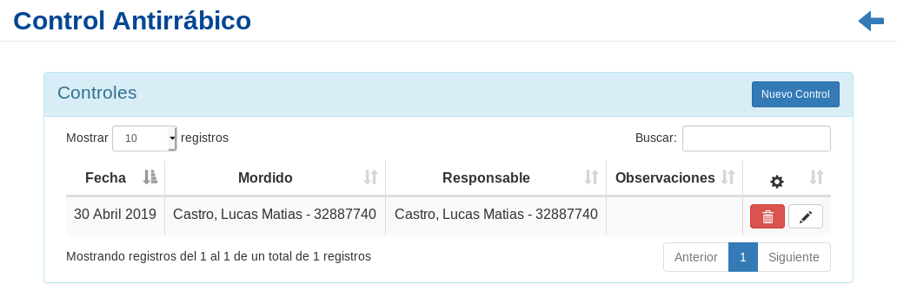
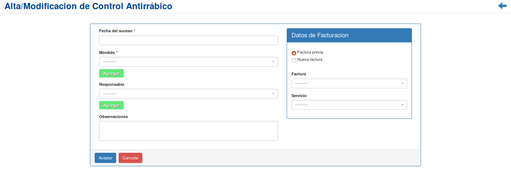
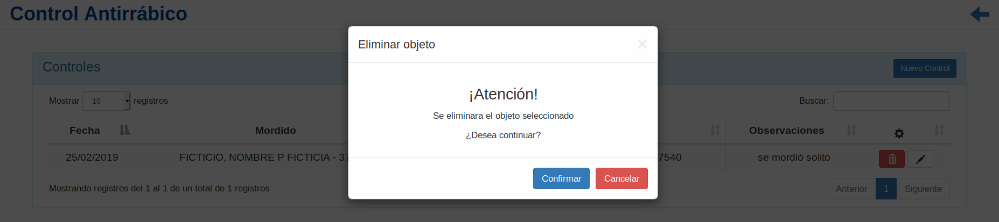
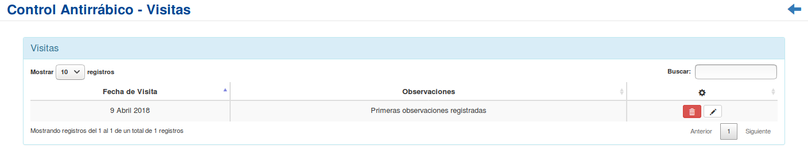

Control Antirrábico¶
Se presentará una pantalla que contendrá un listado con todos los Controles Antirrábicos que se encuentren registrados en el sistema hasta la fecha.
Junto con el listado, se presentarán un conjunto de funcionalidades que permitirán manipular cada Control Antirrábico.
Estas funcionalidades son:
Además, si el usuario desea Registrar un nuevo Control Antirrábico:
Nuevo control Antirrábico¶
Si el usuario desea crear un nuevo Control Antirrábico, deberá presionar el botón
Nuevo Control.A continuación el sistema lo redirigirá a la siguiente pantalla:
En esta parte el usuario se le presentará un formulario y deberá ingresar los datos solicitados para dar de alta un nuevo Control Antirrábico.
Atención
Se puede observar un botón verde con la leyenda
Agregaren el campo Mordido, así como en el campo Responsable del animal, el cual es utilizado para agregar una nuevo Mordido o un Responsable del animal respectivamente si no se encuentran registrados en el sistema. Además; El sistema siempre validará que la información ingresada sea correcta. En caso de que los datos ingresados sean incorrectos el sistema lo informará. En este punto, las posibles causas de errores son:
- Uno o más campos obligatorios vacíos.
- Uno o más campos con un formato incorrecto.
Una vez completado el formulario, se volverá a la pantalla que contendrá el listado de Controles.
Eliminar Control Antirrábico¶
Si el usuario desea eliminar un Control Antirrábico, deberá seleccionar en la columna de acciones asociado al Control Antirrábico y presionar el ícono
EliminarUna vez realizado el paso anterior aparecerá la siguiente ventana emergente (modal):
En esta parte el usuario deberá decidir si confirma la eliminación del Control Antirrábico o no. Si desea confirmar la eliminación deberá presionar el botón
Confirmar, caso contrario, presionará el botónCancelar.
Registro de Visitas¶
Si el usuario desea registrar una visita debido al acontecimiento ocurrido, referido a ese Control Antirrábico, deberá seleccionar en la columna de acciones asociado al Control Antirrábico y presionar el ícono
Registro de Visitas.Una vez realizado el paso anterior, el sistema lo redirigirá a la siguiente pantalla:
En esta parte al usuario se le presentará un listado con todas los registros de visitas asociado al Control Antirrábico.